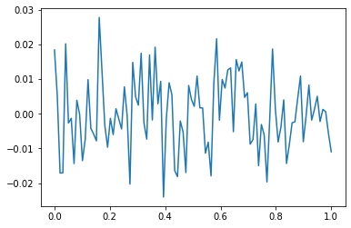
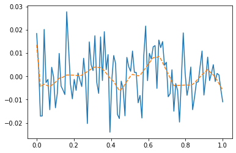
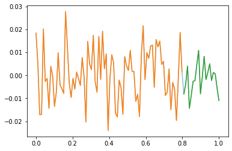
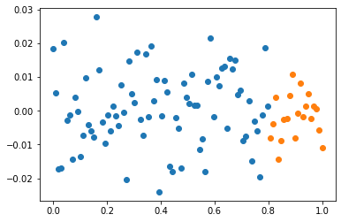
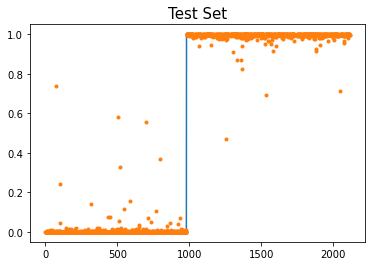
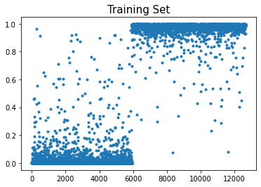
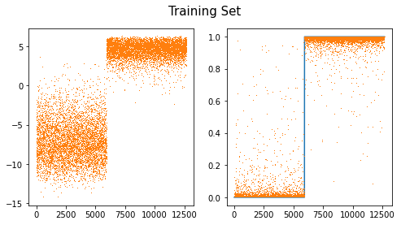

import torch
from fastai.vision.all import *
import matplotlib.pyplot as plt기계학습 (1019) 7주차
딥러닝 기초
드랍아웃
이미지자료분석
imports
깊은신경망– 오버피팅
데이터
- model: \(y_i = (0\times x_i) + \epsilon_i\)
torch.manual_seed(5)
x=torch.linspace(0,1,100).reshape(100,1)
y=torch.randn(100).reshape(100,1)*0.01
plt.plot(x,y)
모든 데이터를 사용하여 적합 (512, relu, 1000 epochs)
torch.manual_seed(1)
net = torch.nn.Sequential(
torch.nn.Linear(in_features=1,out_features=512),
torch.nn.ReLU(),
torch.nn.Linear(in_features=512,out_features=1)
)
loss_fn = torch.nn.MSELoss() #y가 연속형일때는 MSE, 0또는 1일땐 BCE
optimizr = torch.optim.Adam(net.parameters())
for epoc in range(1000):
## 1
yhat = net(x)
## 2
loss = loss_fn(yhat,y)
## 3
loss.backward()
## 4
optimizr.step()
optimizr.zero_grad()plt.plot(x,y)
plt.plot(x,net(x).data, '--')
전체데이터를 8:2로 나누어서 8만을 학습
- 데이터를 8:2로 나눈다 8:training 훈련 셋 2: 검증셋
xtr = x[:80]
ytr = y[:80]
xtest = x[80:]
ytest = y[80:] plt.plot(x,y,alpha=0.5)
plt.plot(xtr,ytr)
plt.plot(xtest,ytest)
x.shape, xtr.shape, xtest.shape(torch.Size([100, 1]), torch.Size([80, 1]), torch.Size([20, 1]))y.shape, ytr.shape, ytest.shape(torch.Size([100, 1]), torch.Size([80, 1]), torch.Size([20, 1]))plt.plot(xtr,ytr,'o')
plt.plot(xtest,ytest,'o')
# 처음 80개만 가지고 net를 학습시키면, - (xtr,ytr) 만 가지고 net를 학습시킨다.
torch.manual_seed(1)
net = torch.nn.Sequential(
torch.nn.Linear(in_features=1,out_features=512),
torch.nn.ReLU(),
torch.nn.Linear(in_features=512,out_features=1)
)
loss_fn = torch.nn.MSELoss()
optimizr = torch.optim.Adam(net.parameters())
for epoc in range(1000):
## 1
# 원래 yhat=net(X) -> 80개하니까 net(xtr) -> 변수가 많아져서.. 귀찮아져.. 그냥 loss에 바로 넣자!!
## 2
loss = loss_fn(net(xtr),ytr) # 원래 loss_fn(yhat,y)
## 3
loss.backward()
## 4
optimizr.step()
optimizr.zero_grad()plt.plot(xtr,ytr,'o')
plt.plot(xtest,ytest,'o')
#plt.plot(xtr,net(xtr).data,'--')
#plt.plot(xtest,net(xtest).data,'--')
plt.plot(x,net(x).data,'--k')
# 보여준 파란색 데이터는 잘맞는데.. 노란색 데이터는 잘 안맞는거 같아.
# 이런 상황을 오버피팅 이라고 한다! -> 파악하지 않아야 할 것까지 파악해 버린것.
# 데이터 수에 비해 노드 수(feature수)가 많으면 오버피팅
# 차원의 저주
# 언더라인 외 오차항 따라가는거.. 오버피팅# 예시
# y = 0,1,1,1,0,1,0,0,1
# x1 = 0,0,0,1,0,0,0
# x2 =
# x3 =
# 변수가 많으면 결정계수 값이 올라가서 깊은신경망– 드랍아웃
오버피팅의 해결
# 오버피팅을 해결할 방법은 제대로 된 건 없지만.. 그 중 하나인 드랍아웃- 오버피팅의 해결책: 드랍아웃
torch.manual_seed(1)
net = torch.nn.Sequential(
torch.nn.Linear(in_features=1,out_features=512),
torch.nn.ReLU(),
torch.nn.Dropout(0.8), # 0.8은 0으로 0.2만 살아남음
torch.nn.Linear(in_features=512,out_features=1) # 보통 linear해서 다 더하고 -> sigmoid로
)
loss_fn = torch.nn.MSELoss()
optimizr = torch.optim.Adam(net.parameters())
for epoc in range(1000):
## 1
#
## 2
loss = loss_fn(net(xtr),ytr)
## 3
loss.backward()
## 4
optimizr.step()
optimizr.zero_grad()plt.plot(xtr,ytr,'o')
plt.plot(xtest,ytest,'o')
plt.plot(x,net(x).data,'--k')
plt.title(r"network is in training mode",fontsize=15)Text(0.5, 1.0, 'network is in training mode')
# 더 오차항을 따라가는 거 같어
# 오잉 다시 돌려보면 그래프가 바껴 net 넣었는데 바뀌는게 이상해! - 올바른 사용법
net.trainingTruenet.eval()
net.trainingFalseplt.plot(xtr,ytr,'o')
plt.plot(xtest,ytest,'o')
plt.plot(x,net(x).data,'--k')
plt.title(r"network is in evaluation mode",fontsize=15)Text(0.5, 1.0, 'network is in evaluation mode')
드랍아웃 레이어
# 드랍아웃 레이어는 뭔가? 왜 결과가 랜덤으로 나왔는가?_x = torch.linspace(0,1,101)
_x tensor([0.0000, 0.0100, 0.0200, 0.0300, 0.0400, 0.0500, 0.0600, 0.0700, 0.0800,
0.0900, 0.1000, 0.1100, 0.1200, 0.1300, 0.1400, 0.1500, 0.1600, 0.1700,
0.1800, 0.1900, 0.2000, 0.2100, 0.2200, 0.2300, 0.2400, 0.2500, 0.2600,
0.2700, 0.2800, 0.2900, 0.3000, 0.3100, 0.3200, 0.3300, 0.3400, 0.3500,
0.3600, 0.3700, 0.3800, 0.3900, 0.4000, 0.4100, 0.4200, 0.4300, 0.4400,
0.4500, 0.4600, 0.4700, 0.4800, 0.4900, 0.5000, 0.5100, 0.5200, 0.5300,
0.5400, 0.5500, 0.5600, 0.5700, 0.5800, 0.5900, 0.6000, 0.6100, 0.6200,
0.6300, 0.6400, 0.6500, 0.6600, 0.6700, 0.6800, 0.6900, 0.7000, 0.7100,
0.7200, 0.7300, 0.7400, 0.7500, 0.7600, 0.7700, 0.7800, 0.7900, 0.8000,
0.8100, 0.8200, 0.8300, 0.8400, 0.8500, 0.8600, 0.8700, 0.8800, 0.8900,
0.9000, 0.9100, 0.9200, 0.9300, 0.9400, 0.9500, 0.9600, 0.9700, 0.9800,
0.9900, 1.0000])dout = torch.nn.Dropout(0.9)
dout(_x)tensor([ 0.0000, 0.0000, 0.0000, 0.0000, 0.0000, 0.0000, 0.6000, 0.0000,
0.0000, 0.0000, 0.0000, 0.0000, 0.0000, 0.0000, 0.0000, 0.0000,
0.0000, 0.0000, 0.0000, 0.0000, 0.0000, 0.0000, 0.0000, 0.0000,
0.0000, 2.5000, 0.0000, 2.7000, 0.0000, 0.0000, 0.0000, 0.0000,
0.0000, 0.0000, 0.0000, 0.0000, 0.0000, 3.7000, 0.0000, 3.9000,
0.0000, 0.0000, 0.0000, 0.0000, 0.0000, 0.0000, 0.0000, 0.0000,
0.0000, 0.0000, 0.0000, 0.0000, 0.0000, 0.0000, 0.0000, 0.0000,
0.0000, 0.0000, 0.0000, 5.9000, 0.0000, 6.1000, 0.0000, 0.0000,
0.0000, 0.0000, 0.0000, 0.0000, 0.0000, 0.0000, 0.0000, 0.0000,
7.2000, 0.0000, 0.0000, 0.0000, 0.0000, 0.0000, 0.0000, 0.0000,
0.0000, 0.0000, 0.0000, 8.3000, 8.4000, 0.0000, 0.0000, 0.0000,
0.0000, 8.9000, 0.0000, 0.0000, 9.2000, 0.0000, 0.0000, 0.0000,
0.0000, 0.0000, 0.0000, 0.0000, 10.0000])- 90%의 드랍아웃: 드랍아웃층의 입력 중 임의로 90%를 골라서 결과를 랜덤으로 0으로 만든다. + 그리고 0이 되지않고 살아남은 값들은 10배 만큼 값이 커진다.
- 드랍아웃레이어 정리 - 구조: 입력 -> 드랍아웃레이어 -> 출력 - 역할: (1) 입력의 일부를 임의로 0으로 만드는 역할 (2) 0이 안된것들은 스칼라배하여 드랍아웃을 통과한 모든 숫자들의 총합이 일정하게 되도록 조정 - 효과: 오버피팅을 억제하는 효과가 있음 (왜??) - 의미: each iteration (each epoch x) 마다 학습에 참여하는 노드가 로테이션으로 랜덤으로 결정됨. - 느낌: 모든 노드가 골고루 학습가능 + 한 두개의 특화된 능력치가 개발되기 보다 평균적인 능력치가 전반적으로 개선됨
이미지자료분석– data
- download data
import torch
import torchvisionpath = untar_data(URLs.MNIST)
100.03% [15687680/15683414 00:00<00:00]
- training set
X0 = torch.stack([torchvision.io.read_image(str(fname)) for fname in (path/'training/0').ls()])
X1 = torch.stack([torchvision.io.read_image(str(fname)) for fname in (path/'training/1').ls()])
X = torch.concat([X0,X1])/255
y = torch.tensor([0.0]*len(X0) + [1.0]*len(X1)).reshape(-1,1)- test set
X0 = torch.stack([torchvision.io.read_image(str(fname)) for fname in (path/'testing/0').ls()])
X1 = torch.stack([torchvision.io.read_image(str(fname)) for fname in (path/'testing/1').ls()])
XX = torch.concat([X0,X1])/255
yy = torch.tensor([0.0]*len(X0) + [1.0]*len(X1)).reshape(-1,1)X.shape,XX.shape,y.shape,yy.shape(torch.Size([12665, 1, 28, 28]),
torch.Size([2115, 1, 28, 28]),
torch.Size([12665, 1]),
torch.Size([2115, 1]))# training 12,656개.. 2,115개는.. test set?이미지자료분석– CNN 예비학습
기존의 MLP 모형
- 교재의 모형 (fastai.book)
#collapse
gv('''
splines=line
subgraph cluster_1{
style=filled;
color=lightgrey;
"x1"
"x2"
".."
"x784"
label = "Layer 0"
}
subgraph cluster_2{
style=filled;
color=lightgrey;
"x1" -> "node1"
"x2" -> "node1"
".." -> "node1"
"x784" -> "node1"
"x1" -> "node2"
"x2" -> "node2"
".." -> "node2"
"x784" -> "node2"
"x1" -> "..."
"x2" -> "..."
".." -> "..."
"x784" -> "..."
"x1" -> "node30"
"x2" -> "node30"
".." -> "node30"
"x784" -> "node30"
label = "Layer 1: ReLU"
}
subgraph cluster_3{
style=filled;
color=lightgrey;
"node1" -> "y"
"node2" -> "y"
"..." -> "y"
"node30" -> "y"
label = "Layer 2: Sigmoid"
}
''')
- 왜 28$$28 이미지를 784개의 벡터로 만든 다음에 모형을 돌려야 하는가?
# nxp 매트릭스 꼴로.. 정리해서 넣으려고- 기존에 개발된 모형이 회귀분석 기반으로 되어있어서 결국 회귀분석 틀에 짜 맞추어서 이미지자료를 분석하는 느낌
- observation의 차원은 \(784\)가 아니라 \(1\times (28\times 28)\)이 되어야 맞다.
새로운 아키텍처의 제시
- 예전
\(\underset{(n,784)}{\bf X} \overset{l_1}{\to} \underset{(n,30)}{\boldsymbol u^{(1)}} \overset{relu}{\to} \underset{(n,30)}{\boldsymbol v^{(1)}} \overset{l_2}{\to} \underset{(n,1)}{\boldsymbol u^{(2)}} \overset{sig}{\to} \underset{(n,1)}{\boldsymbol v^{(2)}}=\underset{(n,1)}{\hat{\boldsymbol y}}\)
- \(l_1\): 선형변환, feature를 뻥튀기하는 역할
- \(relu\): 뻥튀기된 feature에 비선형을 추가하여 표현력 극대화
- \(l_2\): 선형변환, 뻥튀기된 feature를 요약 하는 역할 (=데이터를 요약하는 역할)
- 새로운 아키텍처 - \(conv\): feature를 뻥튀기하는 역할 (2d ver \(l_1\) 느낌) - \(relu\): 뻥튀기된 feature에 비선형을 추가하여 표현력 극대화 - \(pooling\): 데이터를 요약하는 역할
CONV 레이어 (선형변환의 2D 버전)
- 우선 연산하는 방법만 살펴보자.
(예시1)
torch.nn.Conv2d?torch.manual_seed(43052)
_conv = torch.nn.Conv2d(1,1,(2,2)) # 입력1, 출력1, (2,2) window size
_conv.weight.data, _conv.bias.data(tensor([[[[-0.1733, -0.4235],
[ 0.1802, 0.4668]]]]),
tensor([0.2037]))_X = torch.arange(0,4).reshape(1,2,2).float() #(1,2,2):흑백이미지, 2x2
_Xtensor([[[0., 1.],
[2., 3.]]])(-0.1733)*0 + (-0.4235)*1 +\
(0.1802)*2 + (0.4668)*3 + 0.20371.541_conv(_X)tensor([[[1.5410]]], grad_fn=<SqueezeBackward1>)(예시2) 잘하면 평균도 계산하겠다?
_conv.weight.data = torch.tensor([[[[1/4, 1/4],[1/4,1/4]]]])
_conv.bias.data = torch.tensor([0.0])_conv(_X) , (0+1+2+3)/4(tensor([[[1.5000]]], grad_fn=<SqueezeBackward1>), 1.5)(예시3) 이동평균?
_X = torch.arange(0,25).float().reshape(1,5,5)
_Xtensor([[[ 0., 1., 2., 3., 4.],
[ 5., 6., 7., 8., 9.],
[10., 11., 12., 13., 14.],
[15., 16., 17., 18., 19.],
[20., 21., 22., 23., 24.]]])_conv(_X)tensor([[[ 3., 4., 5., 6.],
[ 8., 9., 10., 11.],
[13., 14., 15., 16.],
[18., 19., 20., 21.]]], grad_fn=<SqueezeBackward1>)(예시4) window size가 증가한다면? (2d의 이동평균느낌)
_conv = torch.nn.Conv2d(1,1,(3,3)) # 입력1, 출력1, (3,3) window size (3,3) 대신 3 넣어도 됨
_conv.bias.data = torch.tensor([0.0])
_conv.weight.data = torch.tensor([[[[1/9,1/9,1/9],[1/9,1/9,1/9],[1/9,1/9,1/9]]]])_X,_conv(_X)(tensor([[[ 0., 1., 2., 3., 4.],
[ 5., 6., 7., 8., 9.],
[10., 11., 12., 13., 14.],
[15., 16., 17., 18., 19.],
[20., 21., 22., 23., 24.]]]),
tensor([[[ 6.0000, 7.0000, 8.0000],
[11.0000, 12.0000, 13.0000],
[16.0000, 17.0000, 18.0000]]], grad_fn=<SqueezeBackward1>))(1+2+3+6+7+8+11+12+13)/97.0(예시5) 피처뻥튀기
_X = torch.tensor([1.0,1.0,1.0,1.0]).reshape(1,2,2)
_Xtensor([[[1., 1.],
[1., 1.]]])_conv = torch.nn.Conv2d(1,8,(2,2))
_conv.weight.data.shape,_conv.bias.data.shape(torch.Size([8, 1, 2, 2]), torch.Size([8]))_conv(_X).reshape(-1)tensor([-0.3464, 0.2739, 0.1069, 0.6105, 0.0432, 0.8390, 0.2353, 0.2345],
grad_fn=<ReshapeAliasBackward0>)torch.sum(_conv.weight.data[0,...])+_conv.bias.data[0],\
torch.sum(_conv.weight.data[1,...])+_conv.bias.data[1]
# 여기 이해 안감.. ㅠ (tensor(-0.3464), tensor(0.2739))결국 아래를 계산한다는 의미
torch.sum(_conv.weight.data,axis=(2,3)).reshape(-1)+ _conv.bias.datatensor([-0.3464, 0.2739, 0.1069, 0.6105, 0.0432, 0.8390, 0.2353, 0.2345])_conv(_X).reshape(-1)tensor([-0.3464, 0.2739, 0.1069, 0.6105, 0.0432, 0.8390, 0.2353, 0.2345],
grad_fn=<ReshapeAliasBackward0>)(잔소리) axis 사용 익숙하지 않으면 아래 꼭 들으세요..
- https://guebin.github.io/IP2022/2022/04/11/(6주차)-4월11일.html , numpy공부 4단계: 축
ReLU (2d)
_X = torch.randn(25).reshape(1,5,5)
_Xtensor([[[ 0.2656, 0.0780, 3.0465, 1.0151, -2.3908],
[ 0.4749, 1.6519, 1.5454, 1.0376, 0.9291],
[-0.7858, 0.4190, 2.6057, -0.4022, 0.2092],
[ 0.9594, 0.6408, -0.0411, -1.0720, -2.0659],
[-0.0996, 1.1351, 0.9758, 0.4952, -0.5475]]])a1=torch.nn.ReLU()a1(_X)tensor([[[0.2656, 0.0780, 3.0465, 1.0151, 0.0000],
[0.4749, 1.6519, 1.5454, 1.0376, 0.9291],
[0.0000, 0.4190, 2.6057, 0.0000, 0.2092],
[0.9594, 0.6408, 0.0000, 0.0000, 0.0000],
[0.0000, 1.1351, 0.9758, 0.4952, 0.0000]]])Maxpooling 레이어
_maxpooling = torch.nn.MaxPool2d((2,2))_X = torch.arange(16).float().reshape(1,4,4) _X, _maxpooling(_X) (tensor([[[ 0., 1., 2., 3.],
[ 4., 5., 6., 7.],
[ 8., 9., 10., 11.],
[12., 13., 14., 15.]]]),
tensor([[[ 5., 7.],
[13., 15.]]]))_X = torch.arange(25).float().reshape(1,5,5) _X, _maxpooling(_X) #경계에 있는건 버린당..(데이터를 요약해주는 거니까)(tensor([[[ 0., 1., 2., 3., 4.],
[ 5., 6., 7., 8., 9.],
[10., 11., 12., 13., 14.],
[15., 16., 17., 18., 19.],
[20., 21., 22., 23., 24.]]]),
tensor([[[ 6., 8.],
[16., 18.]]]))_X = torch.arange(36).float().reshape(1,6,6) _X, _maxpooling(_X) (tensor([[[ 0., 1., 2., 3., 4., 5.],
[ 6., 7., 8., 9., 10., 11.],
[12., 13., 14., 15., 16., 17.],
[18., 19., 20., 21., 22., 23.],
[24., 25., 26., 27., 28., 29.],
[30., 31., 32., 33., 34., 35.]]]),
tensor([[[ 7., 9., 11.],
[19., 21., 23.],
[31., 33., 35.]]]))이미지자료분석– CNN 구현 (CPU)
X.shapetorch.Size([12665, 1, 28, 28])(1) Conv2d
c1 = torch.nn.Conv2d(1,16,(5,5)) #16개로뻥튀기하고싶어
print(X.shape)
print(c1(X).shape)
# 1장의채널이 16장으로 뻥튀기..
# 28->24 윈도우사이즈만큼.. 한칸씩 이동하면서 나머지 데이터 빠졌엉. 마지막 4개빠짐torch.Size([12665, 1, 28, 28])
torch.Size([12665, 16, 24, 24])(2) ReLU
a1 = torch.nn.ReLU()
print(X.shape)
print(c1(X).shape)
print(a1(c1(X)).shape)torch.Size([12665, 1, 28, 28])
torch.Size([12665, 16, 24, 24])
torch.Size([12665, 16, 24, 24])(3) MaxPool2D
m1 = torch.nn.MaxPool2d((2,2))
print(X.shape)
print(c1(X).shape)
print(a1(c1(X)).shape)
print(m1(a1(c1(X))).shape)torch.Size([12665, 1, 28, 28])
torch.Size([12665, 16, 24, 24])
torch.Size([12665, 16, 24, 24])
torch.Size([12665, 16, 12, 12])# 16, 12, 12 숫자가 1로 바껴야함...(4) 적당히 마무리하고 시그모이드 태우자
- 펼치자.
(방법1)
m1(a1(c1(X))).reshape(-1,2304).shape #레이어를 통과하는 느낌이 아닌거같ㅇㅏ요torch.Size([12665, 2304])16*12*12 2304(방법2)
flttn = torch.nn.Flatten()print(X.shape)
print(c1(X).shape)
print(a1(c1(X)).shape)
print(m1(a1(c1(X))).shape)
print(flttn(m1(a1(c1(X)))).shape) # 레이어...torch.Size([12665, 1, 28, 28])
torch.Size([12665, 16, 24, 24])
torch.Size([12665, 16, 24, 24])
torch.Size([12665, 16, 12, 12])
torch.Size([12665, 2304])- 2304 \(\to\) 1 로 차원축소하는 선형레이어를 설계
l1 = torch.nn.Linear(in_features=2304,out_features=1)
print(X.shape)
print(c1(X).shape)
print(a1(c1(X)).shape)
print(m1(a1(c1(X))).shape)
print(flttn(m1(a1(c1(X)))).shape)
print(l1(flttn(m1(a1(c1(X))))).shape)torch.Size([12665, 1, 28, 28])
torch.Size([12665, 16, 24, 24])
torch.Size([12665, 16, 24, 24])
torch.Size([12665, 16, 12, 12])
torch.Size([12665, 2304])
torch.Size([12665, 1])- 시그모이드
a2 = torch.nn.Sigmoid()l1 = torch.nn.Linear(in_features=2304,out_features=1)
print(X.shape)
print(c1(X).shape)
print(a1(c1(X)).shape)
print(m1(a1(c1(X))).shape)
print(flttn(m1(a1(c1(X)))).shape)
print(l1(flttn(m1(a1(c1(X))))).shape)
print(a1(l1(flttn(m1(a1(c1(X)))))).shape)torch.Size([12665, 1, 28, 28])
torch.Size([12665, 16, 24, 24])
torch.Size([12665, 16, 24, 24])
torch.Size([12665, 16, 12, 12])
torch.Size([12665, 2304])
torch.Size([12665, 1])
torch.Size([12665, 1])- 네트워크 설계
net = torch.nn.Sequential(
c1, # 2d: 컨볼루션(선형변환), 피처 뻥튀기
a1, # 2d: 렐루(비선형변환)
m1, # 2d: 맥스풀링: 데이터요약
flttn, # 2d->1d
l1, # 1d: 선형변환
a2 # 1d: 시그모이드(비선형변환)
)loss_fn = torch.nn.BCELoss()
optimizr = torch.optim.Adam(net.parameters())t1= time.time()
for epoc in range(100):
## 1
yhat = net(X)
## 2
loss = loss_fn(yhat,y)
## 3
loss.backward()
## 4
optimizr.step()
optimizr.zero_grad()
t2= time.time()
t2-t151.493837118148804plt.plot(y)
plt.plot(net(X).data,'.')
plt.title('Traning Set',size=15)Text(0.5, 1.0, 'Traning Set')
plt.plot(yy)
plt.plot(net(XX).data,'.')
plt.title('Test Set',size=15)Text(0.5, 1.0, 'Test Set')
이미지자료분석– CNN 구현 (GPU)
1. dls
ds1=torch.utils.data.TensorDataset(X,y)
ds2=torch.utils.data.TensorDataset(XX,yy)X.shapetorch.Size([12665, 1, 28, 28])len(X)/10 # batch_size=1266으로 하면 한 epoc을 10번 정도... 위에 epoc100했는데.. 그 세팅 맞춘거...........1266.5len(XX)2115# 하나는 training, 하나는 test에 대응하는.. dl
dl1 = torch.utils.data.DataLoader(ds1,batch_size=1266)
dl2 = torch.utils.data.DataLoader(ds2,batch_size=2115) dls = DataLoaders(dl1,dl2) # 이거 fastai 지원함수입니다2. lrnr 생성: 아키텍처, 손실함수, 옵티마이저
net = torch.nn.Sequential(
torch.nn.Conv2d(1,16,(5,5)),
torch.nn.ReLU(),
torch.nn.MaxPool2d((2,2)),
torch.nn.Flatten(),
torch.nn.Linear(2304,1),
torch.nn.Sigmoid()
)
loss_fn = torch.nn.BCELoss()
#아키텍처: 여기서는 네트워크...lrnr = Learner(dls,net,loss_fn) #architecture자리에 net3. 학습
lrnr.fit(10) # fit (숫자:epoc 숫자를 넣는다.)| epoch | train_loss | valid_loss | time |
|---|---|---|---|
| 0 | 0.904232 | 0.605049 | 00:01 |
| 1 | 0.661176 | 0.371011 | 00:00 |
| 2 | 0.507179 | 0.213586 | 00:00 |
| 3 | 0.392649 | 0.113123 | 00:00 |
| 4 | 0.304377 | 0.065496 | 00:00 |
| 5 | 0.238253 | 0.043172 | 00:00 |
| 6 | 0.188984 | 0.031475 | 00:00 |
| 7 | 0.151837 | 0.024563 | 00:00 |
| 8 | 0.123364 | 0.020047 | 00:00 |
| 9 | 0.101180 | 0.016816 | 00:00 |
4. 예측 및 시각화
# lrnr.model# net# id(net), id(lrnr.model)net.to("cpu") # 네트워크으ㅔ 있는 모든 parameter를 cpu로 옮긴다Sequential(
(0): Conv2d(1, 16, kernel_size=(5, 5), stride=(1, 1))
(1): ReLU()
(2): MaxPool2d(kernel_size=(2, 2), stride=(2, 2), padding=0, dilation=1, ceil_mode=False)
(3): Flatten(start_dim=1, end_dim=-1)
(4): Linear(in_features=2304, out_features=1, bias=True)
(5): Sigmoid()
)- 결과를 시각화하면 아래와 같다.
plt.plot(net(X).data,'.')
plt.title("Training Set",size=15)Text(0.5, 1.0, 'Training Set')
plt.plot(net(XX).data,'.')
plt.title("Test Set",size=15)Text(0.5, 1.0, 'Test Set')
- 빠르고 적합결과도 좋음
# accuracy차이가 별로 없어보여. Lrnr 오브젝트
lrnr.modelSequential(
(0): Conv2d(1, 16, kernel_size=(5, 5), stride=(1, 1))
(1): ReLU()
(2): MaxPool2d(kernel_size=(2, 2), stride=(2, 2), padding=0, dilation=1, ceil_mode=False)
(3): Flatten(start_dim=1, end_dim=-1)
(4): Linear(in_features=2304, out_features=1, bias=True)
(5): Sigmoid()
)netSequential(
(0): Conv2d(1, 16, kernel_size=(5, 5), stride=(1, 1))
(1): ReLU()
(2): MaxPool2d(kernel_size=(2, 2), stride=(2, 2), padding=0, dilation=1, ceil_mode=False)
(3): Flatten(start_dim=1, end_dim=-1)
(4): Linear(in_features=2304, out_features=1, bias=True)
(5): Sigmoid()
)id(lrnr.model), id(net)(140681387850000, 140681387850000)lrnr.model(X)tensor([[5.4047e-03],
[5.1475e-04],
[9.8561e-04],
...,
[9.9602e-01],
[9.9584e-01],
[9.9655e-01]], grad_fn=<SigmoidBackward0>)BCEWithLogitsLoss
- BCEWithLogitsLoss = Sigmoid + BCELoss - 왜 써요? 수치적으로 더 안정
- 사용방법
- dls 만들기
ds1=torch.utils.data.TensorDataset(X,y)
ds2=torch.utils.data.TensorDataset(XX,yy)dl1 = torch.utils.data.DataLoader(ds1,batch_size=1266)
dl2 = torch.utils.data.DataLoader(ds2,batch_size=2115) dls = DataLoaders(dl1,dl2) # 이거 fastai 지원함수입니다- lrnr생성
net = torch.nn.Sequential(
torch.nn.Conv2d(1,16,(5,5)),
torch.nn.ReLU(),
torch.nn.MaxPool2d((2,2)),
torch.nn.Flatten(),
torch.nn.Linear(2304,1),
#torch.nn.Sigmoid()
)
loss_fn = torch.nn.BCEWithLogitsLoss()
lrnr = Learner(dls,net,loss_fn) - 학습
lrnr.fit(10)| epoch | train_loss | valid_loss | time |
|---|---|---|---|
| 0 | 0.896794 | 0.560268 | 00:00 |
| 1 | 0.613384 | 0.301413 | 00:00 |
| 2 | 0.454223 | 0.169741 | 00:00 |
| 3 | 0.346758 | 0.092166 | 00:00 |
| 4 | 0.268065 | 0.056573 | 00:00 |
| 5 | 0.210524 | 0.039757 | 00:00 |
| 6 | 0.167973 | 0.030431 | 00:00 |
| 7 | 0.135910 | 0.024560 | 00:00 |
| 8 | 0.111290 | 0.020503 | 00:00 |
| 9 | 0.092058 | 0.017516 | 00:00 |
- 예측 및 시각화
net.to("cpu")Sequential(
(0): Conv2d(1, 16, kernel_size=(5, 5), stride=(1, 1))
(1): ReLU()
(2): MaxPool2d(kernel_size=(2, 2), stride=(2, 2), padding=0, dilation=1, ceil_mode=False)
(3): Flatten(start_dim=1, end_dim=-1)
(4): Linear(in_features=2304, out_features=1, bias=True)
)fig,ax = plt.subplots(1,2,figsize=(8,4))
ax[0].plot(net(X).data,',',color="C1")
ax[1].plot(y)
ax[1].plot(a2(net(X)).data,',')
fig.suptitle("Training Set",size=15)Text(0.5, 0.98, 'Training Set')
fig,ax = plt.subplots(1,2,figsize=(8,4))
ax[0].plot(net(XX).data,',',color="C1")
ax[1].plot(yy)
ax[1].plot(a2(net(XX)).data,',')
fig.suptitle("Test Set",size=15)Text(0.5, 0.98, 'Test Set')